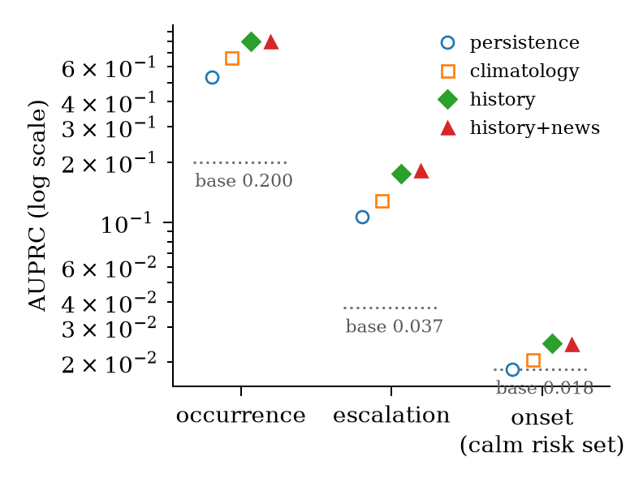
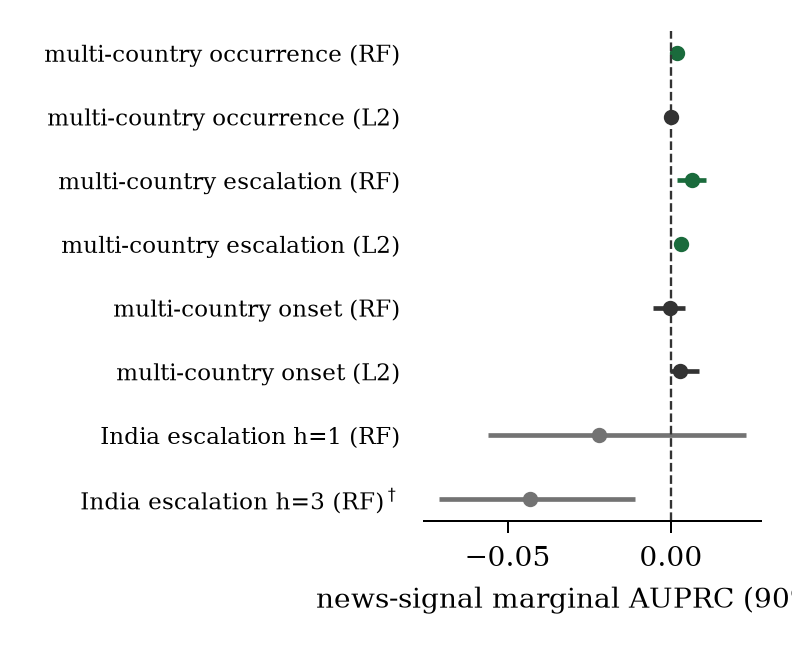

Research Notes
The 0.85 that wasn’t
In 2022 my masters project claimed it could predict social unrest from news with 85% accuracy. This month I audited it, found the number was an artifact, and rebuilt the whole question honestly — 336 million events, 55 countries, every rung of the text ladder. What news actually knows turned out to be stranger than what I claimed.
The confession
Four years ago, for an NLP course at Buffalo, my team built a pipeline that downloaded news articles, matched them to conflict events from ACLED, and trained a classifier that scored 0.85 accuracy at “predicting social unrest.” We reported a five-day warning lead time. It went on my résumé.
This month I went back and read my own notebooks the way I’d review a stranger’s. The label for each article had been constructed by cosine-matching the article’s text against ACLED event descriptions — and then the model was trained to recover that label from the same text, evaluated on a random split. The classifier had learned that articles about protests contain protest words. The “five-day lead” came from a filter that only kept article–event pairs where the article came first. The 0.85 measured nothing about the future.1
The interesting question wasn’t whether my course project was wrong. It was: strip away the leakage — what does news text actually know about upcoming unrest? The literature disagrees violently: some groups report that newspaper topics predict conflict onset; forecasting competitions keep finding that nothing beats “assume next month looks like this month.” So I rebuilt the question from scratch, with the discipline my 2022 self skipped.
The rebuild: rules first, models second
Everything runs on complete unit×period grids (994 admin-1 regions across 55 countries, monthly, on UCDP data; plus an ACLED India state×week track), with three frozen targets: occurrence (any violence next period), escalation (a spike above the region’s own recent norm), and onset — violence erupting in a region that’s been calm for two years, the case that actually matters for early warning. Four rules, learned the hard way:
- Out-of-time only. Rolling-origin backtests — train on the past, score the strictly-unseen future, refit as the window expands. Never a random split, because that’s how you get 0.85s.
- Beat the boring baselines or say so. Persistence and per-region climatology are reported everywhere. Accuracy is banned: with base rates of 2–20%, a model that predicts “nothing happens” scores 80–98%.
- Two model families, always. A random forest and a regularized linear model must agree on the sign of any effect before it counts. This rule exists because an earlier version of my own analysis produced a “statistically significant” negative that flipped positive the moment I regularized.2
- Confidence intervals from saved predictions. Every marginal gets a block bootstrap over test periods, recomputable by anyone from the released per-row predictions.
What’s forecastable at all

Skill collapses by an order of magnitude at each step. Where violence already burns, next month is very learnable (0.80 AUPRC against a 0.53 persistence baseline). Whether it spikes is much harder but real (0.175 vs 0.107). And onset — eruption after two calm years — is close to unforecastable for everything I tested: the best model reaches 0.025 against a 0.018 base rate, and persistence is completely blind there by construction, since every region in the risk set looks identical to it. The case early-warning systems exist for is the case nobody can call.
The text ladder
Onto that scaffold I bolted every text signal I could construct from news, in increasing order of depth: GDELT’s machine-coded tone and article volume; its thematic tags; topic models over event narratives; precipitation anomalies as a non-news control; and finally — because “your text signals were too shallow” is the correct objection to everything above — neural sentence embeddings of 1.37 million human-written headlines, harvested from the URL slugs of the 336 million GDELT events I’d joined to the panel by pure geography.3

Three results, and I’d defend each at gunpoint:
1. Text’s real complement is tiny, but it exists. On escalation, adding news signals to event history is worth +0.3 to +0.6 points of AUPRC — significant in both model families, surviving 95% intervals, four alternative label definitions, and a robustness grid. That’s roughly 2–4% relative improvement. It is also about a hundred times smaller than what my leaky 2022 evaluation implied.
2. Single-country studies can’t see it. My India-only intervals were ±0.03 wide — a ±0.005 effect is invisible at that scale. It took 87,000 test region-months across 55 countries to resolve the effect at all. I suspect this explains a good chunk of why the literature disagrees: everyone is measuring the same small number with instruments of wildly different power.
3. The part of news that helps isn’t the part you’d think. This is the finding I didn’t expect. The embeddings — the richest representation, the one that beats every machine-coded signal as a standalone predictor (0.105 vs 0.085) — add nothing on top of event history. Null in both families. What carries the small complement is the count-like content of news streams: how much is being reported, where, how often. The semantic content — what the articles actually say — is precisely what the event record already encodes. News semantics are subsumed; news arithmetic is not.
Nothing cracks it. Not event history (1.35× base rate), not counts, not themes, not a million embedded headlines — null in every cell, across calm windows of one, two, and three years. The regime where the literature most hoped text would shine — where the event record is empty by definition — is the regime where everything I tested fails together. If someone tells you their system predicts eruptions in quiet regions, ask for their risk-set definition and their base rate before anything else.
What I’d tell my 2022 self
- Your label is your result. If the target is any function of the inputs, the model will find the function and you will find a publication-shaped artifact.
- Random splits are how time-series lie to you. The future must be structurally unseen — not just held out, but later.
- “Significant” is a property of a pipeline, not a truth. Mine flipped sign under regularization once. Now every effect needs two model families to agree before I believe it.
- Small true numbers beat large false ones. +0.006 with clean intervals taught me more about the world than 0.85 ever did — and it’s the only one of the two I can build on.
Bottom line
- Unrest is forecastable where it’s already burning, barely forecastable where it spikes, and unforecastable where it begins. An order-of-magnitude skill cliff at each step, measured out-of-time across 55 countries.
- News text adds a real but tiny complement to event history — +0.3–0.6 AUPRC points on escalation, family-robust, label-robust — and its source is the count-like content of coverage, not the semantics. The meaning of the news is already in the event record.
- The whole thing is reproducible. The benchmark, panels, per-row predictions, and every script are public: SUB-Forecast v1.0. If you think a richer text signal clears the bar my signals didn’t — the harness is waiting.
Sources & further reading
- Code, data & released predictions: github.com/JayeshSuryavanshi/social-unrest-forecasting (benchmark spec in
BENCHMARK.md) - Ground truth & signals: UCDP GED · ACLED · The GDELT Project · Open-Meteo
- The literature this argues with (and owes): Mueller & Rauh’s newspaper-topic conflict forecasting (APSR 2018; JEEA 2022) · the ViEWS escalation-prediction competitions (Vesco et al. 2022; Hegre et al. 2025) · Chadefaux & Schincariol on covariates vs. autoregression (EPJ Data Science 2025) · Kapoor & Narayanan on leakage in ML-based science
- The original 2022 course project, preserved warts-and-all: Social-Unrest-Prediction-NLP